«Насть,
это малина»
Юля Муха вспоминает первый Алтай. И эту малину.
У нас для тебя кое-что есть
Настя, устройся поудобнее.
Нажми на конверт

С шестилетием!Наши голоса ↗Всё начинается
с одного движения ↙
Музыка, камера и желание двигаться.
Здесь сохранилось, как это выглядело.
Настя, здесь тебе
кое-что хотят сказать.
Нажми на кружочек →
Как много нас здесь.
Иногда достаточно одной фразы, чтобы снова оказаться там.
«Насть,
это малина»
Юля Муха вспоминает первый Алтай. И эту малину.
Произносить грубым голосом. Вспоминать Алтай.
Помнишь кота на заправке? Его видео тоже здесь. А рядом — наши коты на все случаи.
Танец закончился. Расходиться не хочется.
«Когда-нибудь я сниму фильм
о своей жизни».
Листай вбок. Нажимай, чтобы задержаться в моменте.
Можно просто смотреть.
«Танцуй так, будто на тебя смотрит
любящий взгляд Насти».
Для тебя, Настя
И каких людей
вокруг себя собрала.